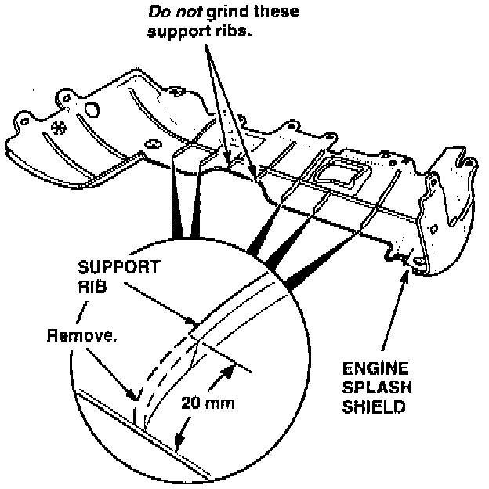
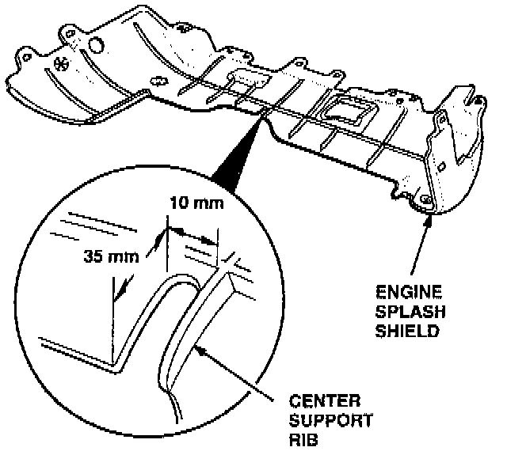
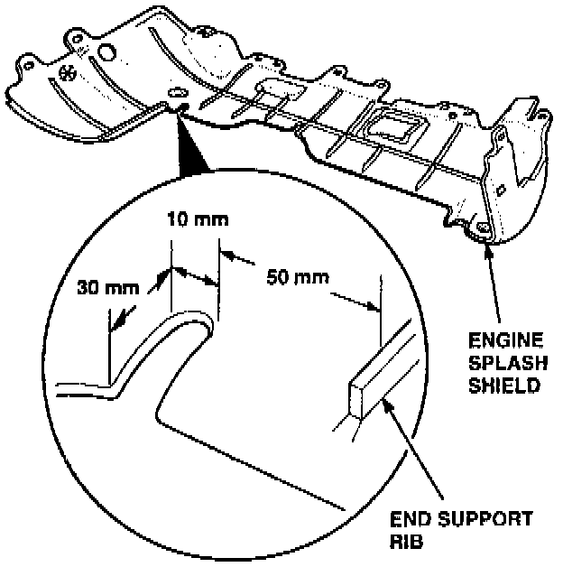
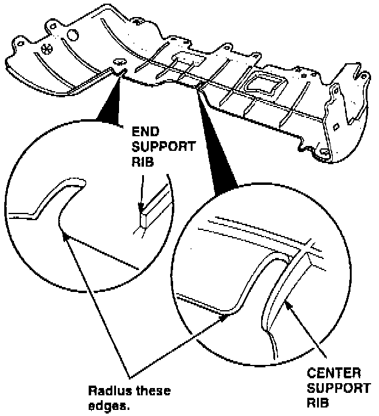

Engine Splash Shield - Knocks Off The A/C Belt
June 13, 1995BULLETIN NO.
95-013
YEAR
1994-95
MODEL
INTEGRA
VIN APPLICATION
ALL
Engine Splash Shield Knocks Off the A/C Belt
SYMPTOM
The A/C system is inoperative because the A/C belt has come off the pulleys.
PROBABLE CAUSE
When parking the car, the engine splash shield may go over a parking stop. When backing the car away, the engine splash shield may catch on the parking stop, causing it to flex down and make contact with the A/C compressor belt. This causes the belt to come off the pulleys.
PARTS INFORMATION
Engine splash shield: P/N 74111-ST7-A00
WARRANTY CLAIM INFORMATION
In warranty:
The normal warranty applies.
Out of warranty:
Any repair performed after warranty expiration may be eligible for goodwill consideration by the District Technical Manager or your Zone Office. You must request consideration, and get a decision, before starting work.
Operation number: 810011
Flat rate time: 0.5 hour
Failed P/N: 74111-ST7-A00
Defect code: 004
Contention code: B01
CORRECTIVE ACTION
Inspect and/or replace the engine splash shield if necessary, then modify it to improve flexibility.
1. Inspect the engine splash shield for damage beyond its usability.
^ If the engine splash shield is reusable, remove and modify it using the following procedures.
^ If the engine splash shield is damaged beyond repair, replace it with the one listed under PARTS INFORMATION, then modify the new splash shield using the following procedures.
2. Place the engine splash shield on a work bench.

3. Use a die grinder to remove support rib material from the five support ribs indicated. Remove approximately 20 mm of the support ribs on the rear edge of the engine splash shield, then radius the cuts smooth.

4. Cut a 10 x 35 mm slot on the left side of the center support rib.

5. Cut a 10 x 30 mm slot on the left side of the engine splash shield.

6. Radius both slots in the areas indicated
7. Reinstall the engine splash shield.